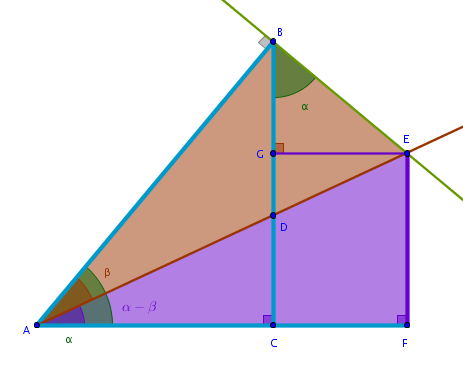

Problem
Express the sine of a composite angle \(\alpha - \beta\) in terms of trigonometric functions of primitive angles \(\alpha\) and \(\beta\).
Solution
In the previous chapters we have discovered that a certain arrangement of right triangles can be used to deduce the identities that express the trigonometric functions of a sum of two angles via trigonometric functions of primitive or single angles.
In this and the remaining trigonometry-related chapters we continue our investigation of the question of whether the above arrangement of right triangles can be used to deduce the identities that express the trigonometric functions of a difference of two angles via trigonometric functions of single angles.
Quite remarkably it turns out that the answer to the above question is - yes. The only rearrangement of the angles in question we have to make is to place the smaller angle, \(\beta\), inside the larger one, \(\alpha\):
By definition then we have:
$$\sin (\alpha - \beta) = \frac {EF}{AE} =$$ $$\frac {GC}{AE} =$$ $$\frac {BC - BG}{AE} =$$ $$\frac {BC}{AE} - \frac {BG}{AE}$$The ideas that we have developed in the previous chapters, examining the line segments that form a fraction, apply here also. For example, \(BC\) is a side of the right triangle \(\triangle ACB\) and \(AE\) is a hypotenuse of the right triangle \(\triangle ABE\) and both of these right triangles share \(AB\):
$$\frac {BC}{AE} = \frac {BC}{AE} \times 1 =$$ $$\frac {BC}{AE} \times \frac {AB}{AB} =$$ $$\frac {BC}{AB} \times \frac {AB}{AE}$$From \(\triangle ACB\) we have:
$$\frac {BC}{AB} = \sin \alpha$$From \(\triangle ABE\) we have:
$$\frac {AB}{AE} = \cos \beta$$and:
$$\frac {BC}{AE} = \sin \alpha \cos \beta$$ $$\sin (\alpha - \beta) = \sin \alpha \cos \beta - \frac {BG}{AE}$$Consequently, \(BG\) is a side of the right triangle \(\triangle BGE\) and \(AE\) is a hypotenuse of the right triangle \(\triangle ABE\) and both of these triangles share \(BE\):
$$\frac {BG}{AE} = \frac {BG}{AE} \times 1 =$$ $$\frac {BG}{AE} \times \frac {BE}{BE} =$$ $$\frac {BG}{BE} \times \frac {BE}{AE}$$ $$\frac {BG}{BE} = \cos \alpha$$ $$\frac {BE}{AE} = \sin \beta$$ $$\frac {BG}{AE} = \cos \alpha \sin \beta$$and:
$$\bbox[#e8e8e8,3pt]{\sin (\alpha - \beta) = \sin \alpha \cos \beta - \cos \alpha \sin \beta}$$\(\blacksquare\)